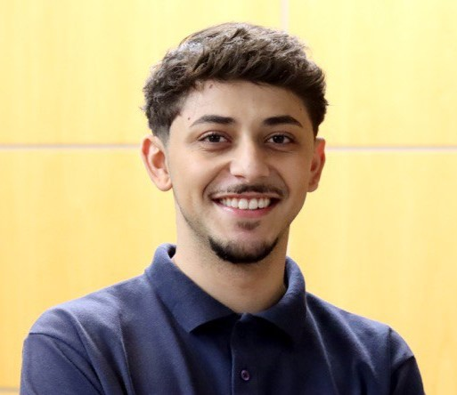

Pedro Dias

Profissional em busca de novos desafios. Altamente organizado e
adaptável. Abordagem proativa e criativa. Comprometido com o crescimento pessoal
e profissional e empenhado em agregar valor aos processos da empresa.
FORMAÇÃO
- Bacharelado em Ciências Contábeis, pela Universidade Presbiteriana Mackenzie. 2019 - 2023
EXPERIÊNCIA
- FUNDAÇÃO ANTONIO E HELENA ZERRENER, Assistente administrativo
- Escrituração de notas em sistema ERP;
- Controle, organização e efetuação de pagamentos à fornecedores;
- Entrega de obrigações acessórias fiscais;
- Apoio ao controle de fluxo de caixa.
- VACC - VERDUS, AUDITORIA, CONSULTORIA E CONTABILIDADE, Assistente fiscal
- NUTRICARE S.A., Estágio em logística
HABILIDADES E COMPETÊNCIAS
- Inglês avançado (C1) - University of Michigan (MICHIGAN LANGUAGE ASSESSMENT);
- Excel intermediário;
- Proatividade;
- Trabalho em equipe;
- Adaptabilidade e flexibilidade;
- Criatividade para buscar soluções;
- Comunicação interna e externa;
- Ética e comprometimento com os valores da empresa.
Contact me